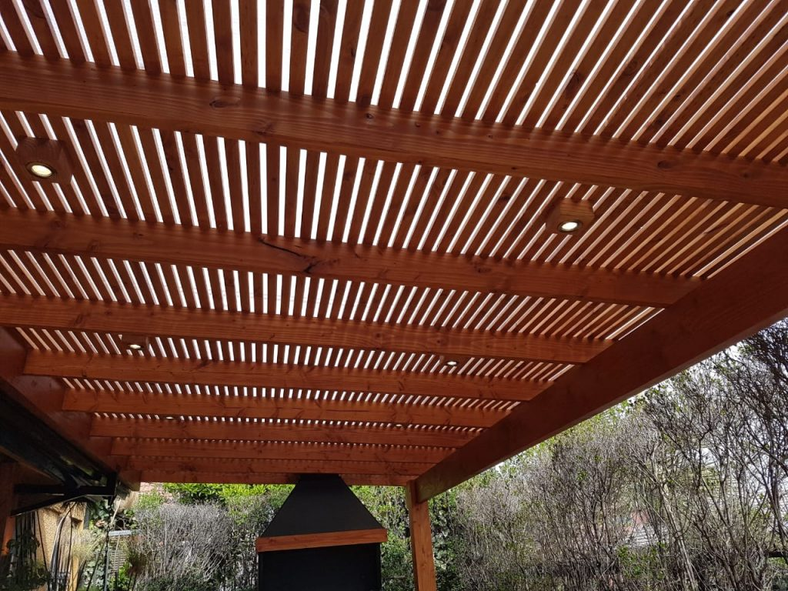

CONSTRUPOLICARBONATO ALVEOLAR es una lámina de policarbonato ligero con unas propiedades de aislamiento excepcionales y alta resistencia al impacto. Una excelente transmición de la luz y un aspecto atractivo hacen que CONSTRUPOLICARBONATO sea la solución ideal para una amplia gama de aplicaciones, incluyendo techos arquitectónicos, pérgolas, terrazas, naves industriales, acristalamientos verticales, entre otros.
Los paneles de policarbonato alveolar Klar, además de ser muy resistentes y flexibles, garantizan una excelente transmisión de luz y mayor brillo. Cuentan con protección UV para asegurar una garantía de 10 años.
Dichas propiedades pueden graduarse gracias a que contamos con un amplio portafolio de colores y espesores, brindando de esta manera soluciones diversas a nuestros clientes.
COLORES: Clear, Blanco y Bronze
